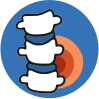
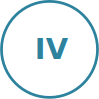
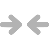

Мануальна терапія - це певний комплекс маніпуляцій з суглобом або хребтом для реалізації рефлекторної дії на
організм
Після ретельної підготовки організму відбувається "траст" (хрускіт у суглобі), він не супроводжується болем

Під час процедури больових відчуттів не має бути, тільки в деяких випадках локальний дискомфорт може бути
присутнім
Етапи лікування
Збір анамнеза,
встановлення діагноза
Мануальна терапія,
лікування причини
Кінезіотерапія,
укріплення м'язового корсету

Профілактика,
підтримання здорового
Методологія

Метод мануальної терапії полягає в корекції хребців та відновленні втрачених функцій хребетно-рухового сегмента.
Під час процедури використовуємо різні техніки та поєднування прийомів: остеопатії, хіропрактики, КСТ, техніки
відновлення м’язового тонусу, а також Китайську методику масажу.
Найчастіше звертаються до нас люди з проблемами гриж (протрузії, пролапси, секвестри ін.), зміщення хребців,
запалення
спинномозкових нервів, радикуліт, сколіоз та багато інших специфічних захворювань, в тому чеслі аномалія
Кімерлі,
синдром хребтової артерії, або кардіальний синдром, вивих та підвивих Атланта.